QUELQUES PIEDS SOUS TERRE, QUATRES BIÈRES ET BEAUCOUP DE POUSSIÈRE 2017

Prendre les transports en commun peut s'avérer très rébarbatif, sauf si...
Série de photographies réalisées dans un endroit gardé secret.
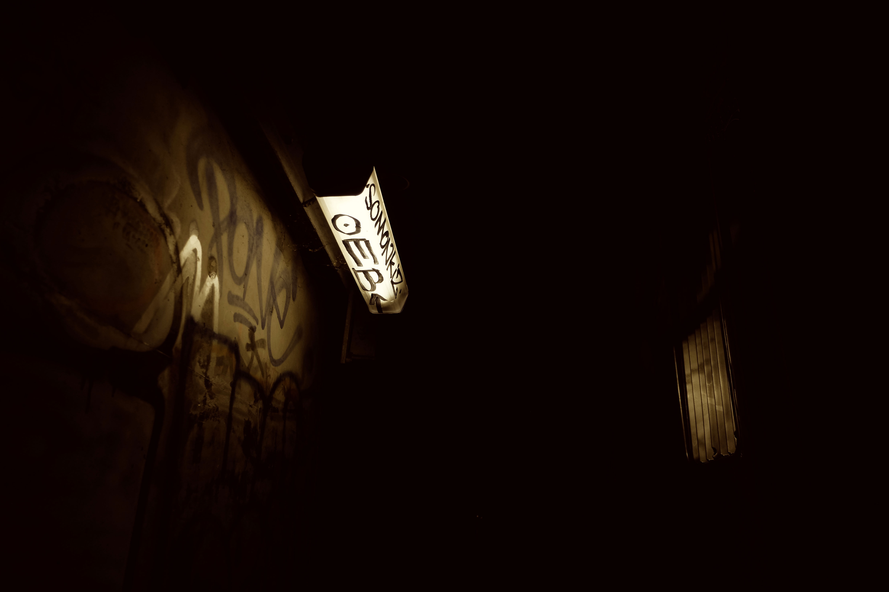
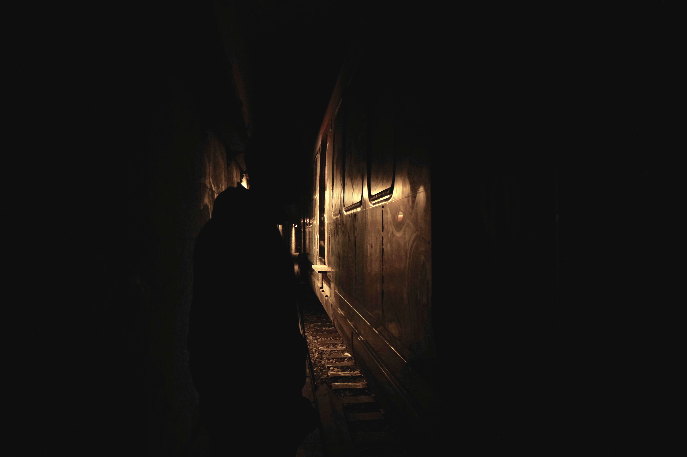
 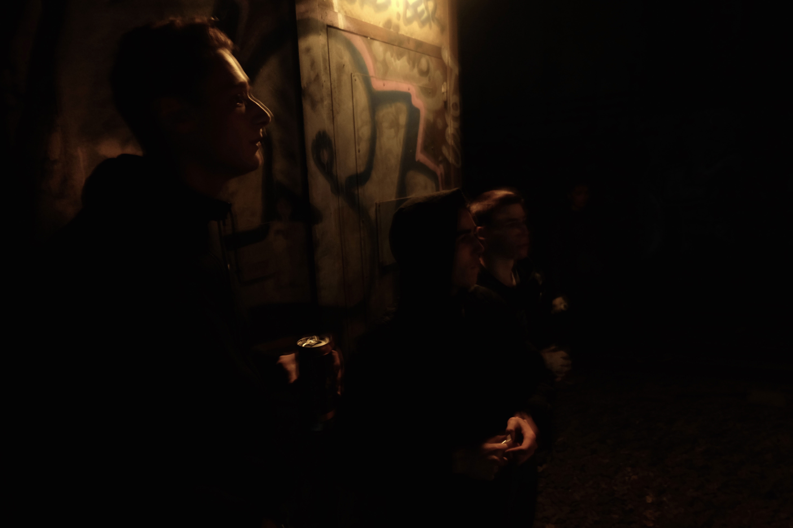
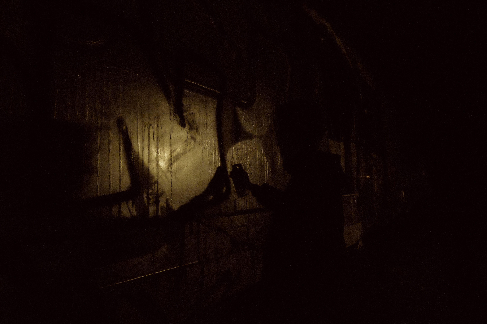
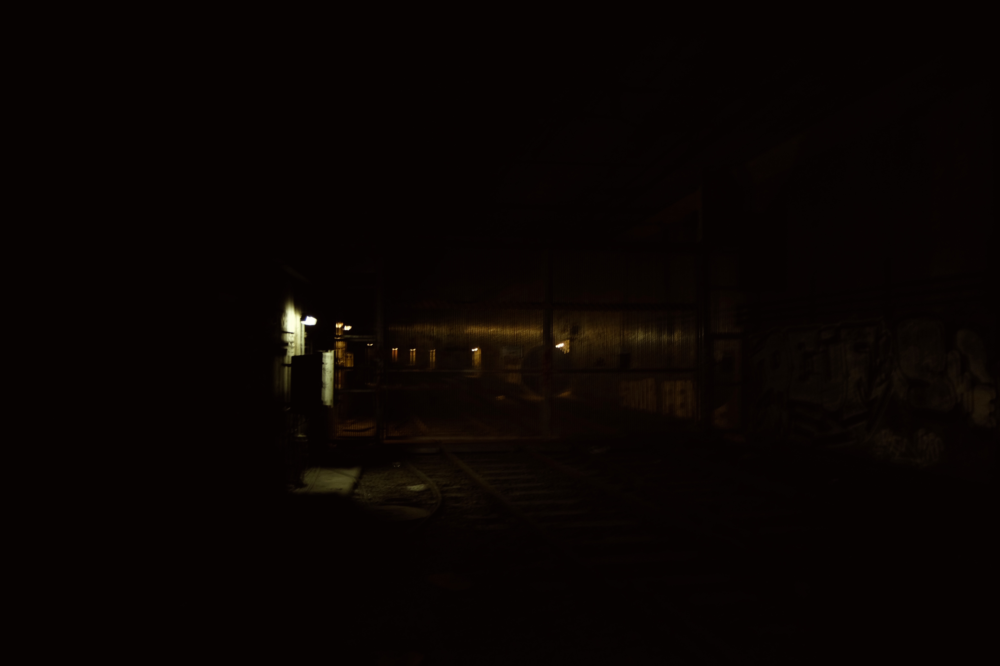
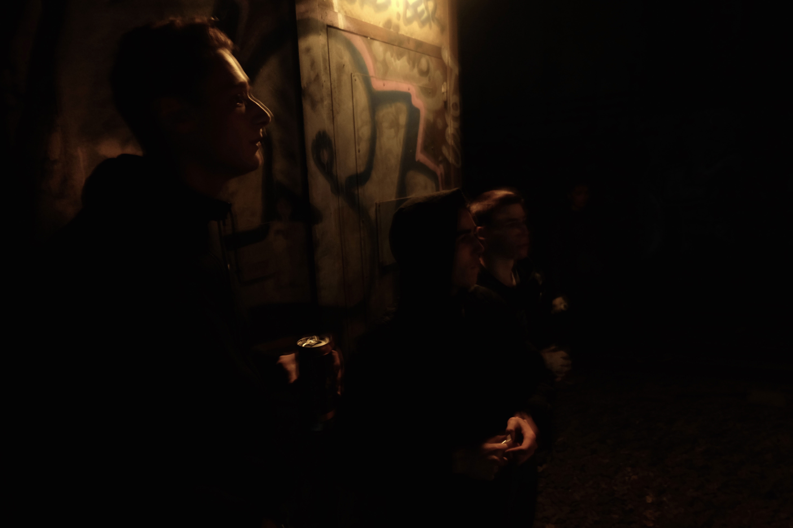
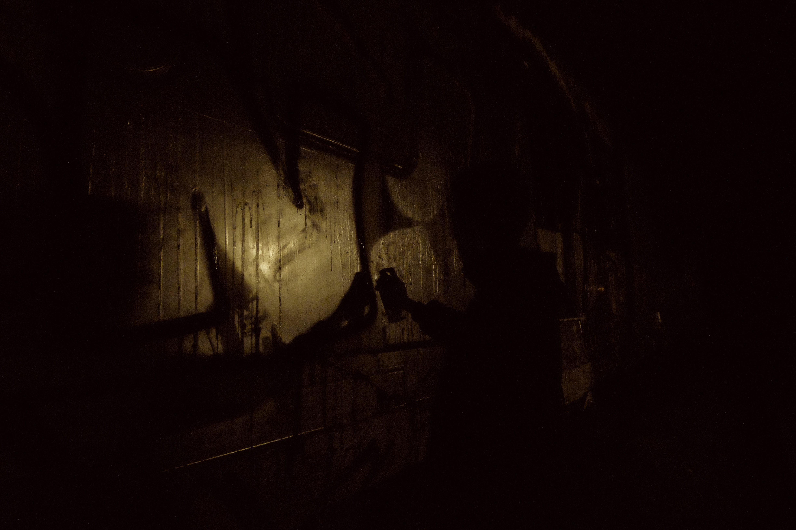
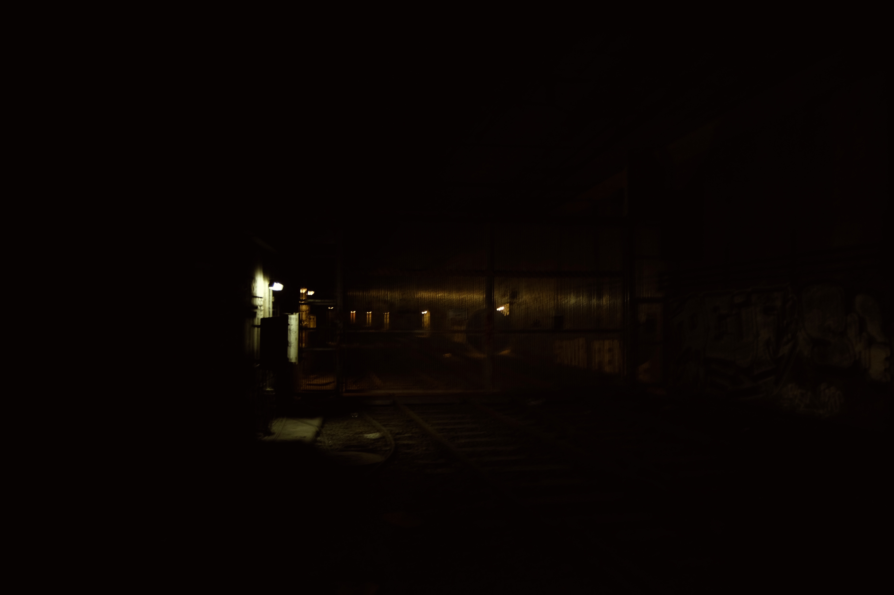
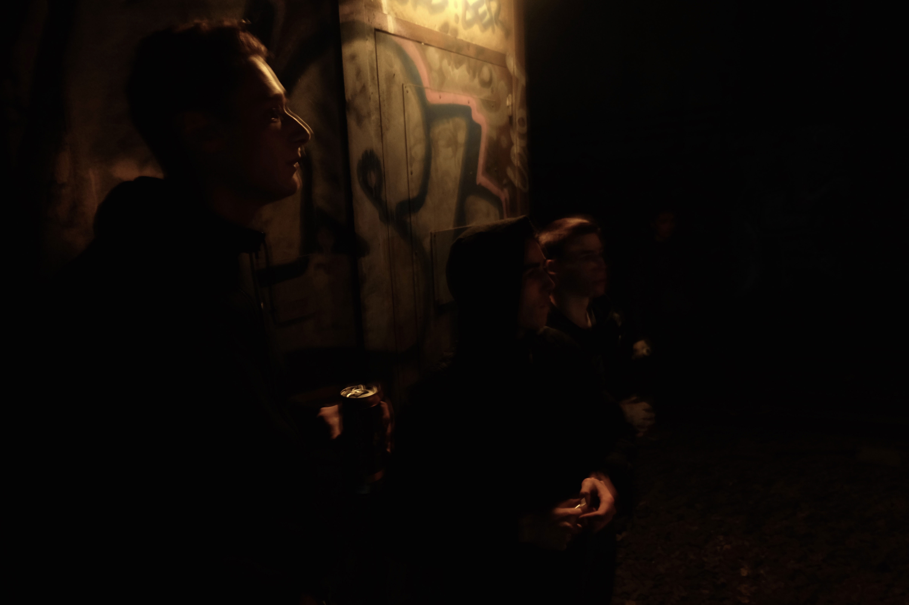
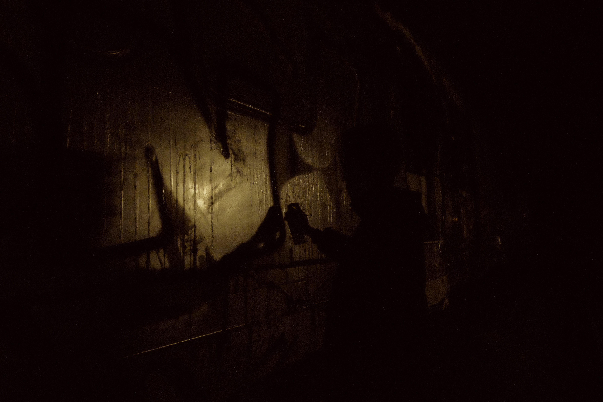
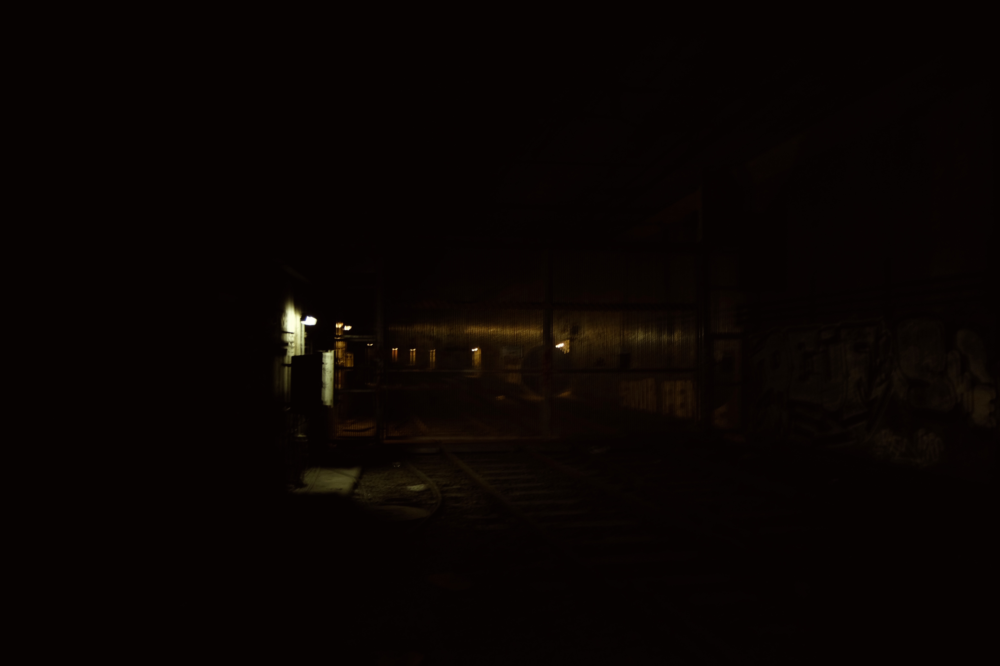